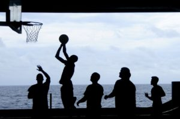
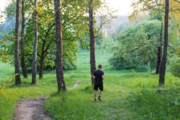

Основные правила физического саморазвития личности
Физическое самовоспитание и самосовершенствование сочетает методы и приемы, направленные на создание гармоничного человека. Спорт сейчас приобретает популярность среди молодежи, вытесняя вредные привычки.
Самосовершенствование – основа яркой жизни
Хорошее самочувствие позволяет выполнять обязанности, вести насыщенную, яркую жизнь. Сила воли играет важную роль, помогая ставить перед собой цели и задачи. Основные задачи физического развития:
- Укрепление организма. Сюда входит физическое совершенствование двигательных навыков, улучшение здоровья, выносливости;
- Подготовка подрастающего поколения к армии, будущей работе;
- Приобретение уважения к активным развлечениям, спорту;
- Раскрытие спортивных способностей.
Роль физической культуры в развитии духовно-развитой личности тоже присутствует – физкультура дисциплинирует, учит ответственности. Физическое совершенствование повышает трудовую, социальную активность, что способствует экономическому развитию страны.
Влияние физкультуры
Значение физической культуры в развитии личности велико — благодаря раскрытию возможностей вырабатывается объективная самоуверенность, умение преодолевать трудности, смелость, решительность. Физкультура вырабатывает целомудренные взгляды, вытесняет вредные привычки, помогает интеллектуальному развитию.
Люди, уделяющие внимание физическому самосовершенствованию, оптимистичней смотрят на трудности. Есть теория, что при занятиях бегом вырабатываются эндорфины. Состояние бегуна после длительной дистанции даже сравнивают с состоянием легкого опьянения.
| Основы самосовершенствования | |
| Физкультурное образование | Воспитание качеств |
| Формирование спортивных двигательных навыков | Сила, быстрота |
| Формирование двигательных практических навыков, умений | Выносливость, ловкость |
| Передача теоретических физкультурных знаний | Гибкость |
Влияние сокращения нагрузок на организм
Стремление к облегчению нагрузок ярко выражено – появились личные автомобили, уменьшилась потребность в ручном труде. Некоторые спортсмены отказываются от лифтов, эскалаторов. Стоит прибегнуть к этому методу не находящим время на занятия спортом.
Значительное снижение нагрузок грозит слабостью скелетных мышц, сердечной мышцы. Происходит перестройка костей, появляется лишний вес, падает работоспособность, ускоряется процесс старения, снижается устойчивость к инфекционным заболеваниям. Нервное перенапряжение с отсутствием нагрузок грозит развитием сердечно-сосудистых заболеваний.
Среди врачей была точка зрения, что нагрузки вредны для пациентов с болезненными отклонениями от норм. Из-за этого доступ к большому спорту для близоруких, людей с аномалиями сердечно-сосудистой системы был практически закрыт. Сейчас это мнение изменилось. Врачи подтверждают – спорт помогает скорейшему выздоровлению. При близорукости помогает настольный теннис. Это хорошая зарядка для людей с плохим зрением.
Физическое самовоспитание и самосовершенствование порождает здоровье, силу, ловкость, работоспособность, выносливость.
Для начала нужно заняться самоанализом. Он включает:
• Объективную самооценку себя как личности, своих возможностей;
• Выяснение своих плюсов и минусов;
• Преодоление негативных сторон личности.
Самонаблюдение представляет собой метод, включающий объективную оценку поступков. Главное при этом – избегать самообмана. Если спортсмен пренебрег тренировкой, нужно выяснить точную причину его поступка. Возможно, это лень. Бывают другие причины – болезнь, слишком интенсивная предыдущая тренировка или отсутствие мотивации. Самоанализ помогает установить причину, предотвратив ее появление впредь.
Критическая оценка помогает при самовоспитании. Для подростков этап затруднителен – они склонны обесценивать свои достижения, страдать от заниженной самооценки. При критической оценке важно участие взрослых людей.
Первый этап физического самосовершенствования заключается в осознанном решении работать над собой. Второй – в составлении конкретного плана, определении целей. При планировании нужно расписать действия, совершенные при определенном временном интервале.
Для успешного достижения цели нужно уметь ставить адекватные, подходящие для конкретной личности, небольшие задачи. Нет смысла типичному офисному работнику сразу бежать длинные дистанции. Для начала неплохо ограничиться пешей прогулкой. Невыполнимая задача может отбить надолго желание заниматься спортом.
Третий этап заключается в практическом выполнении поставленных задач. Если одолевает лень, можно воспользоваться различными методами убеждения – самовнушение, приказ. Для поддержания мотивации можно вести дневник достижений. Записывать туда можно все, что вы считаете достойным шагом вперед.
Здоровый образ жизни
Физическое самовоспитание и самосовершенствование подразумевает
• Соблюдение режима дня. Трудовая деятельность, отдых, сон. Хронический недосып не поможет активным занятиям спортом.
Отсутствие трудовой деятельности влечет за собой еще большую лень.
• Рациональное питание. Часто здоровый образ жизни ассоциируют с диетами, ограничениями в еде.
Приобретают популярность несбалансированные диеты, порождающие проблемы пищевого поведения – анорексия, булимия.
Часто это касается девушек подросткового возраста. Естественно, ни о каких спортивных достижениях речь не идет.
Важно учиться питаться сбалансировано, не переедая. Хронические переедания тоже не способствуют активным тренировкам.
• Разумное внедрение методов закаливания.
Заключение
Крепкое здоровье демонстрирует значение физической культуры в развитии личности. Пренебрежение нагрузками и неправильные привычки приводят к ужасающим последствиям, даже для молодых людей. Медицина продвигается вперед, но болезни можно предотвратить, занимаясь спортом и правильно питаясь. Без крепкого здоровья страдают остальные аспекты. Физическое самосовершенствование улучшает качество жизни, уменьшая потребность обращения за лечебной помощью.